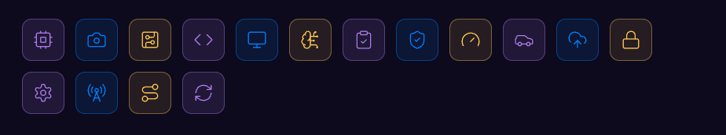
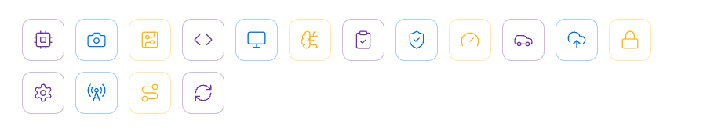
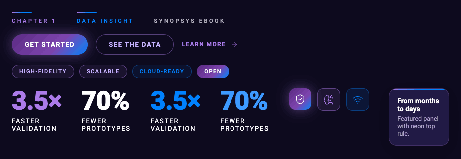
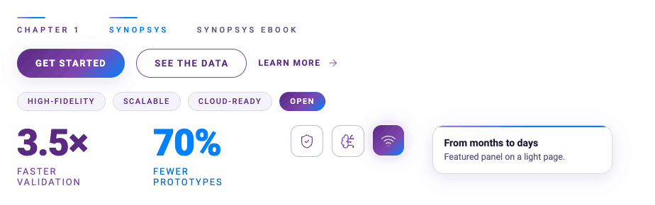
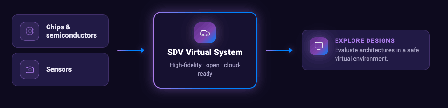
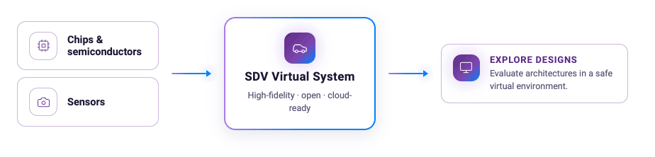

SDV eBook brand guide.
The visual system for the Engineering the Software-Defined Vehicle eBook. It lives under the Synopsys corporate brand but carries its own approved look: cinematic automotive + virtual innovation — dramatic night photography, luminous digital overlays, deep inks, neon accents.
Scope: this eBook only. For the corporate brand, use the Synopsys Brand Identity Guide (Mar 2024).
Voice in one breath
- Confident, benefit-led. Big claims stated plainly: "The next generation of vehicles will be defined by software."
- Sentence-case headlines that open light and land bold: "Build the vehicle before it exists."
- ALL-CAPS microlabels with wide tracking open nearly every layout ("CHAPTER 1", "THE OPPORTUNITY").
- Stats carry the argument — 3.5× faster cycles, 70% fewer prototypes — set oversized.
- Triads for cadence: "Better vehicles. Delivered faster. Kept better." No emoji. No exclamation marks.
Dark cinematic ink, neon accents
Dark ink pages are the default ground; white editorial pages are the counterpoint. Max two background colors per piece.
Ink grounds
Neon overlay palette
Corporate anchors
Gradients
Do keep gradients in accents — rules, arrows, ring borders. Headline copy and stats are always solid. Don't fill body surfaces or diagram panels with them; corporate secondary colors (blue, teal, lime, forest, gold, orange, red) are for charts and data only.
Roboto, light-to-black
Roboto only (Arial fallback) — the corporate primary. Roboto Mono for telemetry and data microcopy.
| Style | Spec | Sample |
|---|---|---|
| Display headline | Light 300, 56px, −0.5px tracking; payoff words Black 900, solid (white on dark, ink on light) — no gradient fills | Build the vehicle before it exists. |
| H1 / section | Black 900, 40px, sentence case | Model it |
| Eyebrow microlabel | Medium 500, 11px, .32em tracking, uppercase, iris or Light Purple; 40×2px gradient rule above | Chapter 1 |
| Stat | Black 900, 72px, solid iris / white / Synopsys Blue; label 13px, 400, .14em caps, white on dark | 3.5× |
| Body | Regular 400 (Light 300 for leads), 16px, 1.55 line-height | One virtual vehicle—chips, sensors, ECUs, and software. |
| Telemetry / data | Roboto Mono 400, 12px, blue separators | sdv.virtual_system · running |
Do split headlines into a light opening and a bold payoff. Don't set deck/eBook body text under 18pt, use semicolons where an em-dash expands a thought, or add exclamation marks.
Marks and glyphs
Never modify, outline, or recolor the logo. Clear space ≥ the "s" x-height on all sides; minimum width 85px. Tagline lockups ("Our Technology, Your Innovation™") available for covers.
Icons


- Line icons, 1.25px stroke (Lucide set, 26 glyphs in assets/icons/) — a flagged substitute until the Synopsys custom icon set arrives.
- Icons always sit in rounded tiles (gradient, outline, or tinted) or thin circles on light pages — never loose on busy imagery.
- Tints: iris / Synopsys Blue / gold on dark pages; darkened purple / blue / corporate gold on white tiles. No emoji, no unicode-as-icon.
Cinematic night, luminous data

Rules for photography
- Full-bleed imagery always carries a protection gradient; text sits on the darkened side, never on busy detail.
- Radial violet glows lift flat dark pages; use one focal glow, not many.
Signature motifs
- 40×2px neon gradient rule above every eyebrow.
- Glowing data-stream lines with node dots; dotted orbit rings around a luminous core.
- Mono telemetry captions (sim_time 00:04:12) as garnish on imagery and diagrams.
- Cards: 12–16px radii, 1px iris hairline, deep soft shadow; featured cards get a 2px neon gradient ring.
The working parts


| Component | Use |
|---|---|
| Eyebrow | Spaced-caps microlabel with gradient rule — opens every layout. |
| Button | Pill, uppercase .12em; primary = brand gradient with violet glow; ghost = hairline outline; light-surface tone available. |
| Chip | Pill tag for attribute triads (High-fidelity · Open · Cloud-ready); outline, solid, or blue. |
| Stat | Oversized solid number (iris, white, or Synopsys Blue) + white regular spaced-caps label. |
| IconTile / Panel | Rounded icon container; hairline-bordered card surface. |
| DiagramNode / FlowArrow | Diagram vocabulary: dark ground, one glowing core, quiet input rows, gradient outcome tiles, iris/blue connector arrows. |


Motion
Restrained: fades and slow pulses only, 220ms with a soft ease-out. Hover lifts brightness; press scales to 0.97. No bounces, no slides.
Full working system: styles.css · tokens/ · components/ · diagrams/ · slides/ — see readme.md in the design-system project.